|
|
|
Нилов Г.И. 50 лет Российскому го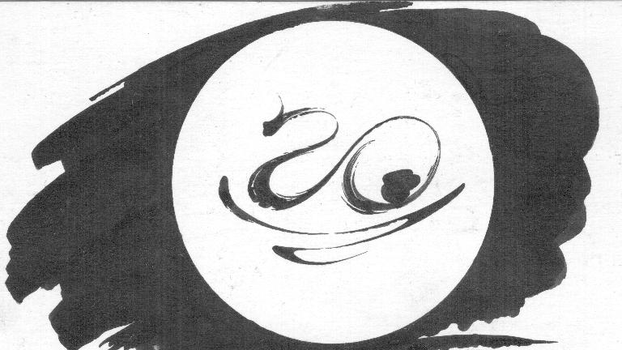 В 2015 году Российское го отпраздновало свой юбилей!50 лет тому назад была создана первая в Советском Союзе официальная секция го!Один из ее основателей Г.И. Нилов расскажет об этом событии. Георгий Нилов. Воспоминания о первых годах развития го в РоссииВ 1986 году председатель Всероссийской секции го при Спорткомитете РСФСР В.В. Батуренко попросил меня рассказать любителям го об истории возникновения и развития го в России. Те заметки легли в основу этой статьи. Считаю её своим долгом памяти перед теми, кто участвовал в увлекательном процессе становления Великой игры в нашей стране, да и перед теми, кто пришёл после нас. Часто меня спрашивали, как мы (это Валерий Асташкин, Борис Шурупов и я, ставшие пионерами Российского го) научились играть в го. Почему эта странная игра, непохожая на все остальные, нас так увлекла, что мы активно включились в процесс ее распространения, посвятили этому многие годы и вложили в это много сил? Февраль 1965т. Встретились три друга, студента. Ребята неглупые, увлекающиеся, немного авантюрные, но в меру азартные, склонные к интеллектуальным играм и уже достигшие уровня «подмастерьев» на шахматном поприще. Мы с Валерой пришли из ЛГУ, где на Дне физика обыграли всех ... в крестики-нолики. Боб вернулся из командировки на Ладожское озеро, где одна женщина по имени Оксана показала ему правила игры в го на доске 13 х 13. В изложении Боба всё было предельно просто. Он нарисовал на листке бумаги в клетку позиции и объяснил: так ходят, так съедают, сюда ходить нельзя, а сюда можно. А вот это территория, если противник туда сунется, его съедят. Очки даются за территорию, съеденные и пленённые камни. Мы немедленно начали рубиться, и ... игра нам очень понравилась! Если можно говорить о любви с первого взгляда по отношению к игре, то мы испытали тогда именно такое чувство. Было какое-то возбуждённое состояние, когда понимаешь, что это твоё, идущее изнутри. Нам открылись действительно необыкновенные, совершенно другие алгоритмы. Шахматы, шашки — это игры на разрушение позиции противника. Го — игра созидания — мне ближе. Как пел Высоцкий, «бить человека по лицу, ну просто не могу». Комбинаторика го сравнима с комбинаторикой шахмат и шашек и на порядки выше игр типа нолики-крестики. Вот так мы с Валерой впервые столкнулись с этой игрой. Кто такая Оксана, мы так и не выяснили. Ни Ю.П. Филатов, ни кто-либо из ленинградских гошников, ни на работе Боба о ней ничего не знали. Мы были опьянены новой для нас игрой, постигая её теорию. Клондайк во многом теряет своё магическое значение по сравнению с нашими находками в ее теории и практике. Чего только стоит изумление и восторг, который мы испытали, когда Борис в партии с Валерой, не ответив на ко-угрозу, соединился, образовав форму в виде «автомобильчика». Через два дня Валера принёс нам развёрнутую теорию крепостей. Конечно, где-то там, на Дальнем Востоке, игра была давно изучена великими мастерами и до фантастических пределов, но мы для себя открывали её заново. Поверьте, это было весьма увлекательное занятие. Будоражило воображения и то, что эта гостья из загадочной Японии — страны с необычными традициями и культурой, страны, разгромленной во время Второй Мировой войны, но за двадцать лет вошедшей в число ведущих промышленных государств мира.
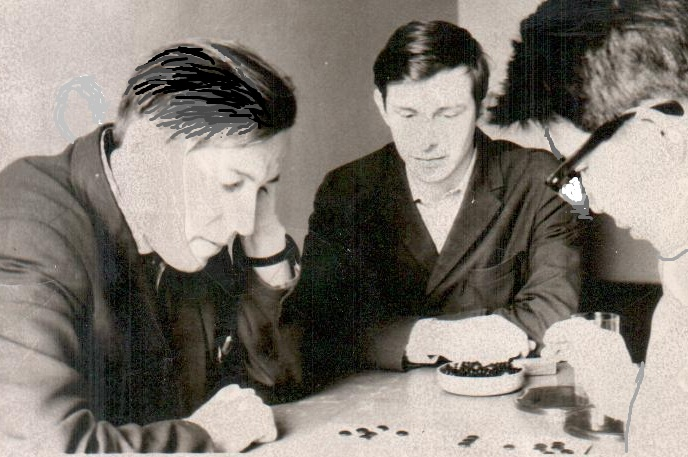 Илл.1. Ю.П. Филатов (слева) играет партию с японским любителем го (справа). Борис Шурупов (в центре) наблюдает за борьбой. С Юрием Павловичем Филатовым мы познакомились в конце апреля 1965 года. Я увидел объявление о лекции Ю.П. Филатова в Городском шахматном клубе им. М.И. Чигорина. Сам я пойти не смог, пошёл Валера. Слушателей оказалось (!) двое: Валера и какой-то пенсионер. После лекции Юрий Павлович и Валера разговорились, и Валера проводил его пешком до самого дома на Кировском проспекте. Но тогда развить знакомство не удалось, мы должны были досрочно сдавать все зачеты и экзамены за летнюю сессию. Дело в том, что сестра Валеры Наташа помогла нам устроиться в геологическую партию, которая работала с начала июня до конца сентября. Экспедиция была небольшой: начальница, шофёр и нас двое. Мы с ветерком доехали на машине до Северного Урала (где-то 100 км от Воркуты) и разбили лагерь. Но тут наша машина серьёзно сломалась, и работы стало меньше. Один из нас через день ходил с шефиней собирать породу в шурфах неподалеку от лагеря, а другой кашеварил у костра. Так что свободного времени было много, и мы нещадно рубились в го. Тогда нами было сыграно несколько тысяч партий. Попутно разработали теорию групп, переходящих в крепости. Выработали первые представления о «глазных формах» и «ожных глазах». Постепенно прочувствовали важность пунктов около форовых точек в углах доски. В итоге был накоплен колоссальный опыт игры, отшлифованы многие технические приёмы, найдены простейшие тактические комбинации («защёлка», «лесенка»), выяснены «азы» борьбы сэмэай. Но такое «начало» имело и оборотную сторону. Интуиция, впитавшая этот опыт, долго затрудняла нам поиск лучших путей игры в партиях на большой доске. Разумеется, мы обучили игре го и свердловских геологов, стоявших по соседству. Устраивали для них турниры, где призом была картошка с грибами, которую умел готовить наш шофёр Володя. Один из геологов зимой прислал мне письмо, в котором сообщил, что обучил своих друзей игре го и она им очень понравилась.
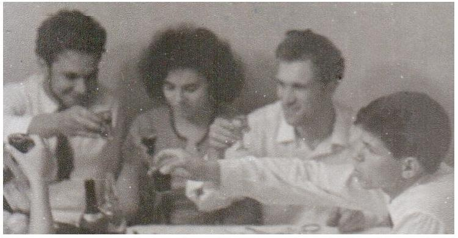
Илл.2. Дружеская встреча пионеров советского го. Вернувшись в Ленинград, мы встретились с Юрием Павловичем, и всё закрутилось. В сентябре они вдвоём с Борисом Шуруповым несколько раз в неделю приходили по вечерам в шахматный клуб ЦПКиО им. Кирова и обучали желающих играть. Мы быстро включились в процесс и облюбовали в самом центре города Михайловский сад, где в павильоне Карла Росси выдавали шахматные и шашечные комплекты — и на скамейках вокруг разыгрывались шахматные баталии. Обычно мы приходили втроём: двое играли, а третий наблюдал. Как только, кто-то проявлял интерес, ему рассказывали об игре и тут же предлагали сыграть партию. Те, кто хотел продолжить знакомство, записывали наши телефоны. И звонили, и спрашивали о том, когда мы придём в сад, где можно ещё поиграть в го. Любознательный у нас народ. Тогда что-то витало в воздухе. Все ждали перемен после ухода на пенсию Н.С. Хрущёва. Бабье лето кончилось, похолодало. Мы — команда из шести человек: уже известная вам четвёрка плюс ученик Филатова Виктор Титов и ещё не помню кто, возможно Лев Петров, решили, что пора перебраться в тепло. Захотели только провести последний летний турнир (в принципе, первый большой турнир по го в стране). Как «богатенькие Буратино», мы с Валерой скинулись и установили небольшие денежные вознаграждения для победителей турнира. Обзвонили всех друзей и знакомых, которых мы научили играть в го, а также всех тех, кто успел приобщиться к игре. Собралось около двадцати человек. Мы с Асташкиным не участвовали, победил Боб Шурупов. Считаю, что он был великим тактиком. В конкурсах шахматных композиторов в рижском журнале «Шахс» он завоевал несколько призов. Мне довелось наблюдать, как он сочинял шахматный этюд. Комбинаторные способности Боба просто изумляли. Именно Боб, так мы его между собой называли, Ю.П. Филатова все звали ЮП, нас с Валерой — по фамилиям.
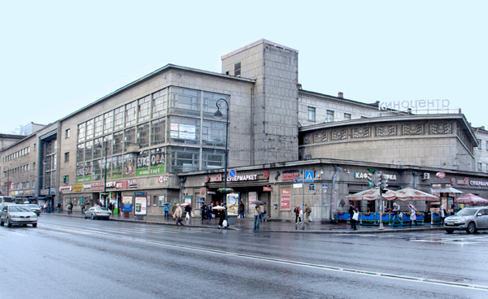 Илл.3. Дворец культуры им. Ленсовета. Он расположен на месте первого спортивного здания в Петербурге «Спортинг паласа», построенного в 1910 году. В нём проводились соревнования по гольфу, лаун-теннису и роликовым конькам. Первым победителем Чемпионата России по лаун-теннису в крытых помещениях стал граф М.И. Сумароков-Эльстон. Он пять лет подряд в предвоенные годы завоевывал этот титул. Ю.П. Филатов договорился с Дворцом культуры им. Ленсовета о помещении для занятий. В середине октября состоялось собрание под председательством мастера спорта по русским шашкам С.С. Маншина, на котором утвердили создание Секции го при ДК им. Ленсовета. Председателем секции был избран Ю.П. Филатов. Валерий Асташкина стал его заместителем, я отвечал за пропаганду, а Виктор Титов — за материальное обеспечение. Состав совета совершенно естественен. Ю.П. Филатов был «заводилой» всего этого действа, самым образованным и опытным среди нас. У Валеры появилась тяга к организационной работе, Виктор работал слесарем на Кировском заводе, а я активно «вращался» в студенческом шахматном движении. Затем все дружно подписали правила поведения во Дворце. Два дня в неделю мы играли в большом зале вместе с шашистами и шахматистами, по выходным проводили турниры. Теоретические занятия и совещания проходили в удобной обстановке в фойе, где антуражем были огромные аквариумы с золотыми рыбками и низкие столики среди огромных комнатных растений. Было также организовано почти ежедневное вечернее дежурство членов секции, которые могли встречать новичков и приобщать их к игре. К зиме секция выросла настолько, что стало трудно проводить занятия, и мы перебрались в Ленинградский городской шахматный клуб им. М.И. Чигорина. Расположились в большой комнате наверху уже одни, когда не хватало места, можно было занимать и балкон. Распорядок занятий был тот же. Два дня в неделю игры и занятия, в выходные проводили турниры. Раз в месяц устраивали общее собрание секции. Вопросы к этим собраниям готовили в узком кругу, часто к нам присоединялся Боб Шурупов и другие активисты. Обсуждения проходили в жарких дискуссиях, подогреваемые обильными «возлияниями». Обычно пили красное вино, причем Юрий Павлович разбавлял его водой, иногда употребляли коньяк. Дело в том, что я три года сдавал зачёты и экзамены на заочном факультете института за одного человека, который «подкидывал» мне за это крепкие напитки. Когда только я всё успевал? Чтобы интересней было играть, в январе 1966 года ввели систему разрядов, аналогичную шахматной, но с учётом форовой системы го. При одинаковых разрядах партия игралась на равных, то есть чёрные за право сделать первый ход платили коми — 5,5 очка. При разнице в один разряд слабейший делал первый ход чёрными, не выплачивая коми. При разнице в два разряда ставил три камня форы и начинали партию белые, при разнице в три разряда — пять камней форы. Потолком приняли разряд кандидата в мастера. Всего было 4 разряда. Для создания системы отсчёта разрядов присудили Ю.П. Филатову, В. Асташкину, Б. Шурупову и мне.
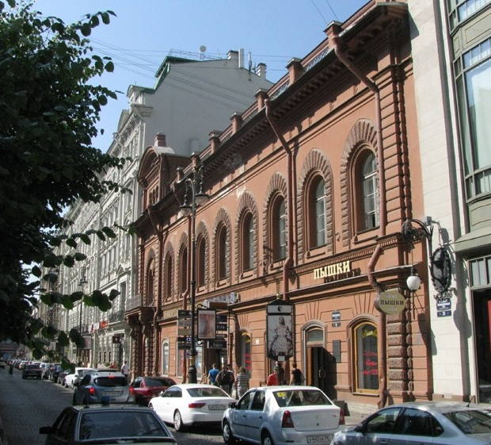 Илл.4. Ленинградский городской шахматный клуб им. М.И. Чигорина. Вскоре к нам присоединился «выросший как на дрожжах» Александр Василов. Чуть слабее играл Женя Кузьменков, далее Олег Гаврилов и Стас Погарев, а остальные отставали разряда на два. О Саше Василове хочется сказать особо. Он учился вместе с Бобом в ЛЭИСе, был кандидатом в мастера по шахматам. Интересно, что стили игры как в шахматах, так и в го у нас были разные. Боб — прирождённый тактик, Валера — стратег, я пытался сочетать и то и другое, то Саша любил защищаться. Его игра ближе всего напоминала японское го. В 1974 году в сеансе одновременной игры на двух досках с форой три камня с профессионалкой 4-го дана Сачикой Хонда ему и мне удалось выиграть. Его партию с комментариями японцы отмечали и опубликовали её в журнале «Go review». Записи квалификационных партий отдавали судье — Ю.П. Филатову. В конце месяца подводился итог. Если набрал норму 75%, как в шахматах, или выиграл каждые три партии из четырёх, разряд повышался. Если игрок не подтверждал свой уровень в течение трёх месяцев, разряд понижался. Конечно, такая система пригодна только для маленькой доски, на ней можно сыграть много партий. Сейчас в стране работает рейтинг-система. Регулярно выпускаются рейтинг-листы. В 1967 году, когда мы стали привыкать к большой доске, то ввели чёткое соответствие с японскими любительскими разрядами. Кандидат в мастера — 1-ый дан, 1-ый разряд — 3 кю, 2-ой — 6 кю, 3-ий — 9 кю и 4-ый разряд — 12 кю. Забавно, что в начале 1968 году я приблизился к тому, чтобы преодолеть эту планку, но судьба рассудила иначе.
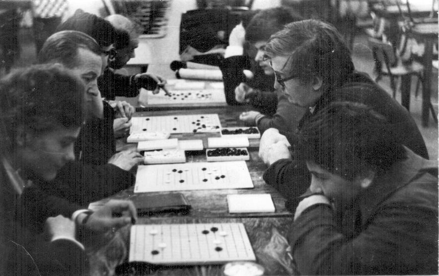 Илл.5. Занятие секции го в ЛГШК им. М.И. Чигорина. Второй слева сидит Ю.П. Филатов. Почему я стал пропагандистом нашего движения, хотя я не высокого мнения о своих «агитаторских» способностях? Никакого сравнения с Юрием Павловичем, который мог убедить кого угодно в чём угодно. Дело в том, что меня еще на 2-ом курсе назначили (точнее, уговорили стать) председателем шахматной секции и капитаном сборной команды института. Мне пришлось активно включиться в шахматную жизнь города, но с возникновением секции го я не забывал заботиться и о нём. Обучил главного тренера общества «Буревестник» в Ленинграде шахматного мастера Ефима Столяра. Мне разрешили приводить в места шахматных соревнований игрока го, который предлагал всем желающим познакомиться с игрой. Благодаря этому, а также активным действиям Боба, Саши и моим, весной больше половины секции составляли студенты и шахматисты. Оказалось, что именно студенты в отличие от школьников были весьма восприимчивы к новым веяниям. Все наши походы по школам кончались неудачно. Может быть весенние мысли ребятишек были о летних каникулах, а может быть играл роль консерватизм родителей: «Что это еще за игра такая?» В институтах стали появляться самостоятельные группы игроков, в которых выросли Лёша Смирнов, Женя Кузьменков, Олег Гаврилов, Стас Погарев, Миша Каплан и Олег Янбулат в университете, Гена Тюльков, Сева Баркан, Олег Гришмановский и Эдик Барковский в Политехническом, Саша Василов и Володя Рукавишников в ЛЭИСе, Мирон Каспаров в Технологическом. Были хорошие ребята из Военмеха, ЛИТМО, Горного и даже одна активная девушка из Текстильного. Начала возникать жизнь го и на предприятиях: Борис Седунов на «Светлане», Виктор Титов на Кировском заводе, Саша Данилов на заводе им. Козицкого. Появилась наша краса и гордость Надежда Лукьянова, работающая в системе ЛенВО. Вообще всех первых перечислить очень трудно, пусть отзовутся сами. Юрий Павлович принес переводы на русский язык главы, посвященной го, из книги Эм. Ласкера «Игры разных народов» и части книги О. Коршельта, одной из первых изданных в Европе ещё в Х1Х веке. В первой были подробно разобраны правила игры, приведены некоторые формы построений в го, стандартные позиции из ёсэ и проанализирована партия с форой. Во второй были приведены партии мастеров и партии на форе с краткими комментариями, а также задачки. Они был не похожа на шахматные учебники, к которым мы привыкли. Партии игрались на большой доске, а не на маленькой. С ними было трудно работать, так как в них использовалась шахматная нотация. Мы уже привыкли к более простой и наглядной японской системе записи партий. Но, кое-какие идеи из них почерпнули. Вспоминаются: играть надо сначала в углах, затем распространяться на сторону и уже потом бороться за центр или чем сильнее группа, тем дальше от неё можно расширятся по стороне. Конечно, мы познакомились с формами построений, которые применяют мастера, и поняли, что атаковать противника лучше издали, а не бросаться в драку, играя вплотную к камню противника. Наибольшее удовольствие нам доставило решение задач, а они оказались довольно сложными. У меня возникло пристрастие к борьбе ко. Тогда же у нас родились основные идеи теории «глазных формах», первые понятия о миаи в задачах цумэ-го и встретилось изрядно нас удивившее изречение: «Лучший ход противника — твой лучший ход». В марте собрались мы всей секцией и стали думать, что делать дальше. Решили развиваться путём создания секций на местах. Так и массовость будет больше, и действовать можно будет более эффективно, да и профком может быть полезен. А городская секция окажет посильную помощь. За основу мы взяли систему организацию шахматного движения в городе. Там почти к каждому коллективу физкультуры прикреплялся тренер — мастер или кандидат в мастера по шахматам. Организационной работой занимался местный активист, а тренер приходил на занятия раз или два в неделю, показывал партии, анализировал игру членов секции или команды, давал советы, иногда проводил сеансы одновременной игры. Кстати, это была похожая на японскую система. Там тренера в клуб выделяет Нихон или Кансай Киин. Профессионалы делают тоже самое, что и наши мастера, кроме того, они имеют право по результатам партии с любителем выдавать ему диплом о присвоение следующего дана. Единственное отличие заключается в том, что платит тренеру не спортивная организация, как у нас, а сами любители или клуб. И это составляет основной заработок многих профессионалов. Задачу мы как всегда поставили грандиозную: провести через полгода чемпионат города, и что самое удивительно — выполнили досрочно! Но это будет позже, а пока была масса подготовительной работы. Виктор Титов договорился на Кировском заводе, чтобы нам нарубили круглых фишек из стали. Вообще Виктор немного выпадал из нашей команды. Тихий, замкнутый в себя мужчина. Поговаривали, что он сидел за диссидентство. Но он не распространялся о себе, а мы не приставали к нему с вопросами. Послали письмо в профком завода от ЛГШК им. М.И. Чигорина с просьбой об изготовлении комплектов. И через неделю получили громадный мешок килограмм на 50! Несколько дней мы красили половину фишек в чёрный цвет. Всё-таки это были не лёгкие фишки из пуговиц, лекарственных таблеток белого и коричневого цвета или плоского картона. Стальные фишки можно было лишь с большим трудом снять с доски. Доски мы делали из картона с наклеенной на него линейной сеткой. Таким образом на первое время мы обеспечили секции на местах игровыми комплектами. Юрий Павлович написал плакат с рекламой игры. Рядом разместил текст с основными правилами игры и диаграммами. Подготовил он и выступление на радио, размножили его на пишущей машинке и раздали членам секций. И постепенно, с трудом, процесс пошёл!
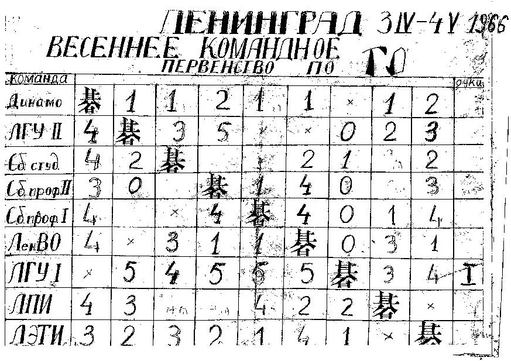 Илл.6. Таблица командного турнира коллективов физкультуры г. Ленинграда. В апреле 1966 года состоялосьпервое командное первенство коллективов физкультуры Ленинграда по го. Участвовало 9 команд, в каждой команде было заявлено по 6 игроков: 4 мужчин, 1 женщина, и 1 запасной. Это была чистая импровизация. Катастрофически не хватало женщин, чисто психологически, ещё не привыкнув к игре, они боялись выступать в соревнованиях. Турнир проводился в два дня: субботу и воскресенье, причём в воскресенье игры были назначены вечером. В результате последние два тура оказались несыгранными, так как отключили свет. Тем не менее, первое место себе уверенно обеспечила команда ЛГУ-1, имевшая сильный и ровный состав. Команда ЛЭТИ выступила неудачно. Я проиграл Саше Василову и Жене Кузьменкову, а Валера — Бобу Шурупову. Я пытался организовать секцию в институте и подтянуть остальных ребят команды до уровня выше начинающих. Но, несмотря на объявления, на приглашение по радио, на занятия приходило 5—7 студентов. Из них только Коля Костромин из Перми отнесся к го серьёзно. Кстати, тогда Валера впервые поделился со мной мыслью, что совмещать организацию соревнований с игрой в них чрезвычайно трудно.
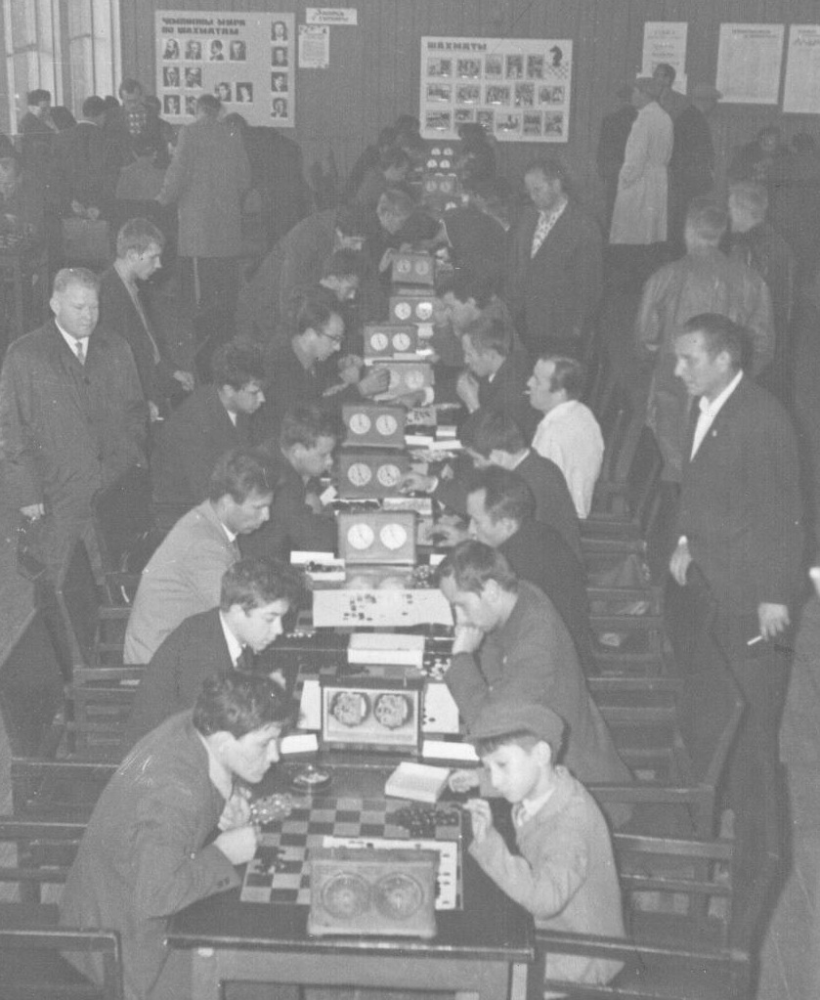 Илл.7. Массовый турнир по го в ЦПКиО им. С.М.Кирова. Фотография Илл.7 была напечатана в статье японской газеты. Многих из участников я уже не помню. На первой доске справа играет брат Володи Юнеева, за ним Олег Гаврилов. На третьей доске встретились Виктор Титов (справа) и Толя Асташкин (брат Валеры), далее слева Саша Василов и на пятой доске, по-видимому, проходит центральная партия турнира: Валерий Асташкин (слева) борется с Юрием Павловичем Филатовым. На лето секция го перебазировалась в шахматный клуб ЦПКиО им. С.М. Кирова. Продолжался квалификационный турнир, игрались лёгкие партии, состоялись несколько массовых турниров. В промежутках между партиями можно было сыграть в шашки, шахматы или настольный теннис. Можно было даже взять на прокат комплект палок для городков. Другими словами, отдыхай на здоровье. Желающих поучаствовать в массовых турнирах было довольно много. Организовывали действо Ю.П. Филатов и Валерий Асташкин. В те годы ЦПКиО им. С.М. Кирова был одним из главных мест воскресного отдыха ленинградцев. Свежий воздух, богатая природа, множество развлекательных аттракционов. Там, забредя ненароком в шахматный клуб, к нам присоединился Володя Юнеев с младшим братом, по-моему единственный играющий ребёнок в нашей секции в то время. А я уехал со студенческим отрядом в Оленегорск.
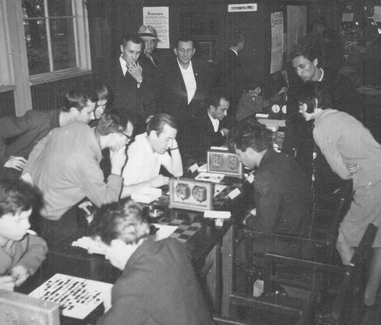
Илл.8. Массовый турнир по го. Зрители наблюдают за игрой Ю.П. Филатова (в белой рубашке слева) и Валерия Асташкина (справа). Осенью занятия в ЛГШК возобновились. Юрий Павлович написал «Кодекс го». Даже по советским меркам это был шедевр по регламентации действий игроков и судей во время турниров. Правила соревнований, по которым действовал Э.Г. Попов, в этом смысле кодексу Ю.П. Филатова и «в подмётки не годились». Конечно, нужно глубже понимать ситуацию. Приходит много начинающих игроков, которые ещё плохо понимают: где территория, а где её нет, какие камни пленные, а какие нет. Но возможность судьи вмешиваться в процесс подсчёта очков и даже в процесс игры по правилам Ю.П. Филатова нам, уже тогда «выросшим из пелёнок», казался чрезмерной. Лишь с большим трудом удалось уговорить Юрия Павловича пока не оглашать свой Кодекс. Мы уже тогда чувствовали, что сам процесс игры является как бы диалогом между игроками, а подсчёт очков в конце игры сводится к соглашению между ними. Иногда для разъяснения сложной ситуации требуется вмешательство судьи. Но зачем определять за них результат игры? В шахматном кодексе допускается присуждение результата партии, если по турнирному регламенту нет возможности её доиграть. Это должно делаться двумя или тремя мастерами, не нуждающихся в доказательстве своей компетенции. Но в обычной практике всё происходит иначе. Один мастер посмотрит, приблизительно оценит и присудит результат, у игрока остаются только шансы на предъявление этюдной ничьи или выигрыша. В го все происходит иначе: игроки сами договариваются. Если же один из игроков скандалит, то после двух-трёх замечаний его просто больше не будут допускать в турниры. Один такой случай был во время одного из соревнований во Дворце молодёжи. Разошлись мирно, он написал заявление с просьбой допустить к игре и обещал «больше никогда не скандалить». В этом — кардинальное отличие от атмосферы вокруг шахматных баталий. Обычно во время блиц-игры шахматисты поносят друг друга разными словами, стремясь как в обычной драке сбить боевой настрой противника и привести его в замешательство. После проигранной партии говорят, что это чистая случайность, результат всего лишь одной ошибки. В го всё иначе. Сначала идут вежливые поклоны или «th» на сервере, а после проигранной партии говорят: да, возможно, мне лучше было бы сыграть иначе. И игроки расходятся с чувством удовлетворения от общения друг с другом. Наше движение постепенно развивалось. На турниры стали приходить до 30-50 человек (Юрий Павлович вёл учёт всех заинтересовавшихся го, прошедших «через наши руки», однако его цифра порядка тысячи человек вызывает сомнение), но регулярно посещали занятия человек 10-20. Когда я вернулся в город, то был буквально огорошен новостью. Благодаря усилиям Алексея Фроловича Асташкина была достигнута договоренность о встрече с Председателем горисполкома г. Ленинграда А.А. Сизовым, тогда это был настоящий Хозяин города и области. Аудиенция состоялась в начале октября. Её результатом стало решение о финансировании Ленинградским спорткомитетом турниров по го. Это означало официальное признание го видом спорта! Я разговаривал с шахматными организаторами о том, что означает эта финансовая поддержка. Они считали, что нам будет не по силам организовать столько соревнований, причем и всесоюзных, посылать спортсменов на эти и международные соревнования и при этом оказывать поддержку секциям на местах. Валера, когда я поделился с ним этими сомнениями, сказал: «Будь, что будет. Как-нибудь они нам помогут — и слава богу». Тогда царила атмосфера эйфории. Как же, такая удача на первом году жизни секции. Были сделаны первые шаги по налаживанию контактов с Ленинградским Домом дружбы и мира между народами и ленинградским отделением Общества Дружбы «СССР — Япония». Они помогали нам в организации встреч с приезжавшими в наш город японскими игроками го. Позже через них мы получали первую литературу по го. В конце октября Ленинградская секция го была избрана коллективным членом ЛО общества дружбы «Япония — СССР», а В.А. Асташкин стал нашим официальным представителем. На следующий год мы запланировали два турнира на большой доске, командный и 10 массовых турниров на малой доске. Первый турнир на большой доске был посвящен памяти экс-чемпиона мира по шахматам Эмануэля Ласкера, который вместе с Эдвардом Ласкером (получившего в последствие имя «Отца американского го») в 1900 году основали в Берлине первый европейский го-клуб. Юрий Павлович перевел с немецкого главу, посвященную го из книги Эм. Ласкера «Игры разных народов». Из нее взята одна из самых известных нам фраз: «По простоте своих правил го превосходит шахматы, не уступая им по богатству комбинаций». Сильнейшие игроки начали осваивать большую доску. Конечно, мы уже пробовали играть на ней, подражая партиям мастеров Х1Х века из книги О. Коршельта. Сначала раскидывали отдельные камни по углам, строя симари и какари, далее распространялись на стороны, но затем ввязывались, как на малой доске в борьбу за углы, добиваясь в них почти законченных позиций, и только потом переключались на передел сторон и завоевания в центре. Ближе к концу года нам прислали несколько журналов «Go review» на английском языке и мы познакомились с творчеством современных нам профессионалов. Каждый выбрал понравившиеся ему фусэки и дзёсэки и затем договорились между собой кто, какие рисунки будет использовать в наших партиях. Не очень большой «мухлёж». В шахматах существует понятие о табиях — дебютных вариантах, каждый ход в которых проверен мастерами. После выбора конкретного дебюта можно сразу переходить к конечной позиции табии и начинать настоящую борьбу в миттельшпиле. Первый мемориал Эм. Ласкера состоялся в начале 1967 года в помещении ЛГШК им. М.И. Чигорина. В нем участвовало 8 игроков, победителем стал Валерий Асташкин. Второе место занял я, проигравший решающую партию Валере. На третьем месте обосновался Борис Шурупов. Десять самых, как нам казалось, приличных партий из этого турнира мы послали в общество «Нихон Киин». Через месяц из Японии пришел отзыв. Оказалось, что мы неплохо знаем фусэки и дзёсэки и изобретательно ведем борьбу, но у нас полностью отсутствует представление о катачи — красивой игре, и часто встречаются ошибки в правильном использовании стандартных форм построения. Силу нашей игры они оценили в диапазоне от 1 дана (фусэки и борьба) до 3 кю (формы и катачи).
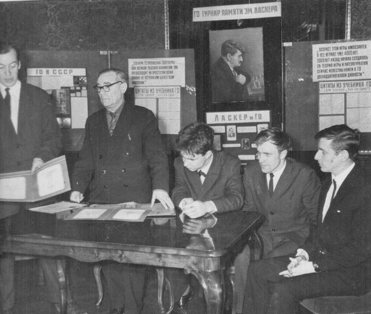
Илл.9. Торжественное закрытие Первого турнира по го памяти Эм. Ласкера. Жизнь секции текла, как обычно, но энтузиазм в борьбе за рост массовости немного спал. Сильные игроки увлеклись игрой на большой доске и стали меньше участвовать в квалификационных баталиях, что уменьшило стимулы у более слабых игроков. Провели несколько массовых турниров, но организовать народ на участие в командном турнире, таком же, как в предыдущем году, не удалось. Несколько порадовали отклики в прессе. Если в Ленинграде заметки проходили как бы «вскользь», никто не приходил с вопросами: « А что это такое?», то нас очень обрадовала газета, присланная из Японии. В ней говорилось об образовании секции го и наших делах по распространению игры. Была помещена даже фотография одного из первых массовых турниров в ЦПКиО. Еще одна статья из японской газеты была посвящена Первому турниру памяти Эмануэля Ласкера.
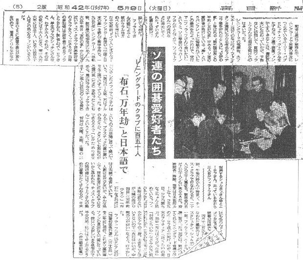 Илл.10. Вырезка из японской газеты со статьёй о первом турнире памяти Эм. Ласкера. Юрий Павлович принес в секцию перевод с американского книги G.W. Rosental «Go for Primer», построенной на анализе игры на доске 13х13. Однако, она нам не приглянулась. Мы её переросли, да и к более удобной и наглядной, чем шахматная нотация, японской записи партии мы уже привыкли. Идея «фикс» Ю.П. Филатова — создать теорию игры на малой доске и стать чемпионами мира на ней, не претворилась в жизнь. А ведь мы потратили на её осуществление более полутора лет своей жизни. В апреле 1967 года состоялся турнир, посвященный весеннему празднику Японии — «Дню рождения императора», приуроченный к «Дню цветения сакуры» Это был первый турнир в Ленинградском доме дружбы народов. Играть в здание, стены которого помнят императора и знатных вельмож ХVIII–ХIХ веков, было одно удовольствие. Огромные залы, высоченные, красиво расписные потолки, зеркала и двери с золотой лепниной, большие окна с видом на Фонтанку. Рассказывают, что император Александр Первый часто совершал пешие прогулки по Неве и Фонтанке и заходил в этот дворец, попить чайку. Затем также пешком возвращался к государственным делам. Заметьте — никакой охраны! В течение 15 лет он встречался с дамой своего сердца Марией Антоновной Нарышкиной, и кто бы хоть слово сказал. Настолько сильно изменились наши нравы за 200 лет.
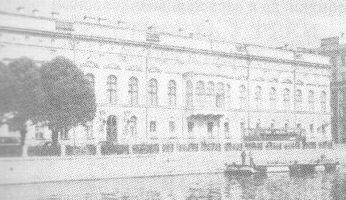 Илл.11. Ленинградский Дом дружбы и мира с народами зарубежных стран. Летом я собрался заработать деньги в студенческом отряде, но, узнав, что командиром будет прошлогодний политрук, от этой затеи отказался. С Валерой мы загорелись новым способом передвижения по стране — езде «автостопом». Я со своей будущей женой, согласовав это путешествие с её родителями (правда, не известив их обо всех деталях), поехали на несколько дней в Пушкинский заповедник «Михайловское и Тригорское». Вернувшись, я регулярно ездил к ней на дачу, стараясь помогать с разными работами по саду. В свободное время я посещал секцию го, которая работала в шахматном клубе ЦПКиО им. С.М. Кирова. Когда возвратились Валера с Наташей, которые «умотали» аж до самой Молдавии. Мы активно включились в работу секции, провели несколько массовых турниров. Попутно затеяли интересное многоборье: «Двенадцать подвигов интеллектуального Геракла». В него входило три шахматные игры (обычные шахматы, поддавки и «максимумер»), четыре шашечные (шашки, поддавки, го и нолики-крестики), три карточные (преферанс, покер и «Балда» — помесь «подкидного дурака» и покера), настольный теннис и городки. От городков из-за технических сложностей пришлось отказаться. Участвовало в этом состязании шесть человек: Юрий Павлович, Валера, Боб, Саша Василов, Женя Кузьменков и я. За победу в каждом виде начислялись очки, победитель получал 6 очков, остальные — 5, 4, 3, 2, 1 — согласно занятым местам. Закончить это соревнование не удалось, результаты у всех, кроме уехавшего из города Жени, были более, менее равные. Осенью мы возвратились к занятиям в секции ЛГШК им. М.И. Чигорина. Однако в нашем движении начали возникать первые трещины. Эффективно управлять деятельностью группы активистов численностью тридцать и более человек было не так просто. Нужна была внятная структура всей организации с распределением прав и обязанностей её членов. Нужно было иметь план работы, обеспечение учебного процесса и спортивных мероприятий методикой, литературой, игровыми комплектами (которых тогда не было в продаже), финансированием, связью со СМИ и поддержкой разных организаций. Такая работа в масштабах всего города не могла держаться только на энтузиазме одиночек. В довершение ко всему наш лидер Юрий Павлович Филатов при всём своём внутреннем диссидентстве был по своему характеру обычным советским «управленцем», не терпящим ни малейшей критики в свой адрес. Более того, делиться хоть толикой власти он ни с кем не хотел и многие вопросы решал единолично и безоговорочно. У нас участились конфликты, которые мы с Валерой пытались как-то сгладить, но не всегда это удавалось. На одном собрании после речи руководителя против имевшего смелость возразить учителю Севы Баркана (а мне этот парнишка нравился), нам ничего не оставалось, как голосовать «за» исключение провинившегося, либо, в крайнем случае, «воздержаться». Наибольшей ошибкой, как я сейчас считаю, был такой же «уход» С. Лифшица, шахматного тренера ЛГШК, который мог бы помочь Ю.П. Филатову в составлении отчётов перед Спорткомитетом.
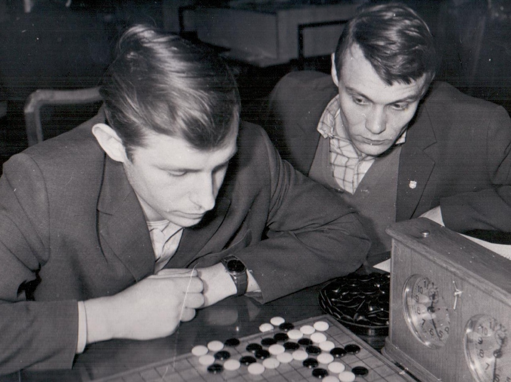 Илл.12. Второй турнир памяти Эм. Ласкера. Играет Борис Шурупов. Тем временем дела наши шли своим чередом. Секция работала, турниры в выходные дни проводились, квалификационные партии игрались. Мы по тихому провели соревнования, посвящённые 50-летней годовщине Великой Октябрьской социалистической революции. В турнире на большой доске, как я помню, победил Саша Василов. Юрий Павлович работал над начальным учебником го, Валера устраивал свои семейные дела. А я съездил в Москву, чтобы через Михаила Михайловича Постникова договориться со стажером МГУ из Японии Тэруо Судзуки по участию его во «Втором турнире памяти Эмануэля Ласкера». Этот турнир состоялся в январе 1968 года — первый официальный международный турнир по го в нашей стране. В нём принял участие мастер любительского 1-го дана Тэруо Судзуки, который приехал из Москвы с женой Норико Судзуки. Этот турнир вызвал определенный резонанс в мире. Эдвард Ласкер, считающийся «отцом американского го», написал нам большое письмо с воспоминаниями о первых годах европейского го и своем намерении посетить наш турнир, К сожалению, приехать к нам и «освятить» возникновение го в СССР ему не удалось. Он доехал только до Финляндии, где с ним случился сердечный приступ, который, к сожалению, стал смертельным. Борьба на турнире была очень острой и напряжённой. Мне и Бобу Шурупову удалось победить Тэруо Судзуки, а я проиграл только одну партию Бобу. В результате я занял 1-е место, Т. Судзуки — 2-е, а А. Василов, Б. Шурупов и В. Асташкин одержали по четыре победы. Согласно коэффициентам Бергера или Мак-Магона (о последних мы тогда и не подозревали), третье место должно было достаться Бобу. Но в этом турнире (видимо, последний случай в моей практике) распределение мест осуществлялось по суммарной разнице набранных во всех партиях очков.
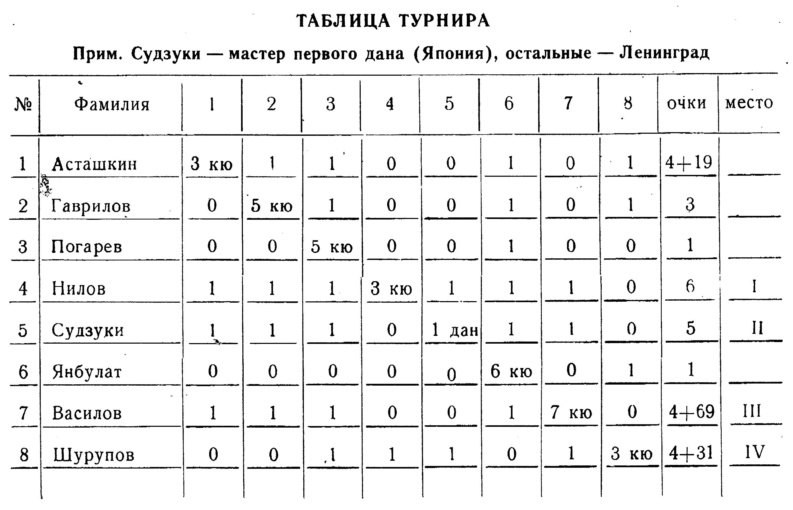 Илл.13. Итоговая таблица Второго турнира памяти Эмануэля Ласкера.
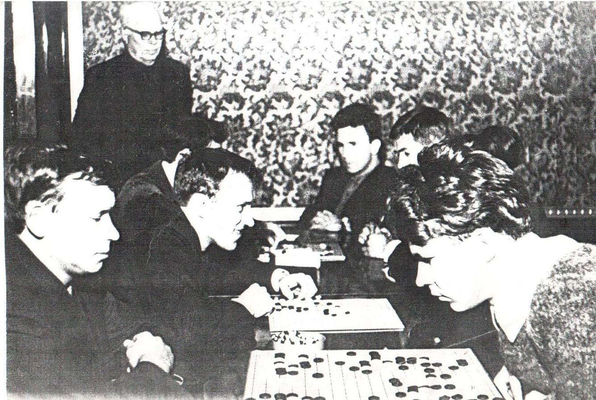
Илл.14. Второй турнир памяти Эм. Ласкера. Разминка после тура. В феврале 1968 года Юрий Павлович дописал свою книгу и попросил директора ЛГШК Н. А. Ходорова и референта ЛДД по Японии Р.В. Барабанова дать отзывы о ней для представления в издательство. В последней главе книги было описана «блестящая» идея Ю.П. Филатова о том, что игра го является моделью современной войны, а именно ядерной. Он утверждал, что в го существует ряд качеств, не известных ранее таким традиционным играм, как шахматы, представляющим собой лишь театральное сражение средневековых рыцарских армий. Однако СССР в то время позиционировал себя как последовательного борца за мир во всём мире. Поэтому печатать такие заявления в описании популярной игры по пониманию государственных чиновников, которые всегда перестрахуются, «не лезло ни в какие ворота». Я убеждал Ю. П. Филатова не излагать эту идею, которая касается лишь нескольких моментов, не отражающих суть игры. Так например, при атомном взрыве бомба сама уничтожается, а в игре го, сотворивший это «бесчинство», камень остаётся. Но Юрий Павлович «упёрся, как бык». Р.В. Барабанов и Н.А. Ходоров предложили убрать эту главу, но Юрий Павлович наотрез отказался, разругался с ними и ушёл из секции, хлопнув дверью. Как я думаю, сейчас после опыта работы со спортивными функционерами в качестве секретаря Федерации го СССР и председателя Санкт-Петербургской федерации го (бадук), причина скандала и ухода Ю.П. Филатова из секции го была совсем в другом. Ведь он провалил составление финансового отчета в Спорткомитет. После чего Н.А. Ходоров отказал в оформление аренды помещений ЛГШК для занятий секции и турниров, участие японского мастера в турнире также не было оплачено. Единственно, что удалось Ю.П. Филатову сделать, так это выпустить красочные обложки для турниров и публикации положения о втором турнире.
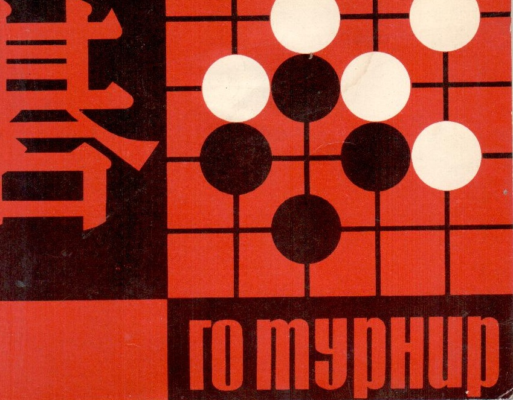 Илл.15. Обложка для программы и положения го турниров. Мы приуныли. Работа секции го развалилась. Так закончился первый этап развития го в нашей стране — этап её зарождения. Ребенок появился на свет!. Ребенок маленький, но здоровый и ... с очень большими амбициями. Подавай ему сразу финансовую поддержку государства. Прошло 50 лет со дня образования при ДК им. Ленсовета первой секции го в нашей стране. Уже многих нет в живых. Юрий Павлович Филатов покинул нас в 2000 году (см. его биографию на сайте www.fishka.spb.ru), В.А. Асташкин ушёл в 2008 году, Б. Шурупов — в 2009 году. В заключение этой статьи я попытаюсь объяснить, почему именно создание этой секции в Ленинграде я считаю точкой отсчёта для официальной даты появления го в нашей стране. Несколько слов об истории го в Европе. Первые упоминания об этой игре относятся к ХVII веку. В 1881 году была издана первая книга по го на европейском языке. В 2000 голу Европейская го федерация отпраздновала столетний юбилей со дня образования в Берлине первого клуба го. Это событие принято считать датой рождения европейского го. После этого события появились такие же клубы и группы игроков во Франции, Англии, Австрии и других странах. В России в 1882 журнал «Нива» опубликовал статью о лекции немецкого мастера по «облавным шашкам». Под этим именем игра го появилась в словаре Ф.А. Брокгауза и И.А. Ефрона в самом конце ХIХ века, как утверждает Лёня Громовой. Я читал эту статью в Словаре, изданном в 1902 году. Интересно, что в современной версии, изданной в 2002 году, статья об игре уже носит название го. По сведениям Юрия Павловича, в конце ХIХ века газета «Нива» опубликовала сообщение о лекции немецкого мастера по «облавным шашкам». О дальнейшем нам известно только то, что в Петербурге (1914 год) была размножена на ротапринте брошюра с правилами игры го. В 1933 году решением пленума ЦК КПСС было запрещено любое упоминание о культуре Японии.
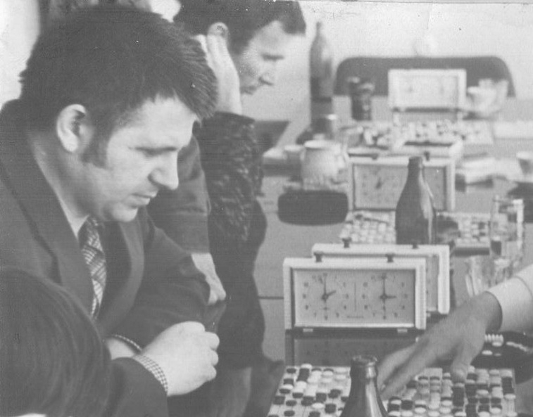 Илл.16. Александр Петрович Тизик (первый в левом ряду) принимает участие в товарищеском матче с японскими любителями го. В 1962 году в журнале «Юный техник» была напечатана статья с правилами игры в го. Насколько мне известно, до этой статьи в Советском Союзе существовало три группы игроков. Две в Москве: одна вокруг М.М. Постникова, другая около А.П. Тизика, Ещё одна в Ленинграде во главе с профессором заочного Политехнического института И.И. Падерно. Михаил Михайлович Постников — любопытнейшая личность. Доктор математических наук, решивший одну из проблем француза Эвариста Галуа (основателя высшей алгебры), расшифровавший шлиссельбургские тайнописи Н.И. Морозова, которые легли в основу исторических теорий А. Фоменко и, наконец, увлекающийся всеми загадочными играми. Так, приехав в Москву, чтобы пригласить японского мастера 1-го дана для участия во «Втором мемориале Эм. Ласкера», я был немедленно ознакомлен с правилами маджонга. Мне всё-таки удалось сыграть две партии в го с одним из авторов статьи в «Юном технике», одну на равных, другую на форе. С И.И. Падерно поговорить не удалось. Пока я играл в го с учеником профессора две партии, Юрий Павлович успел разругаться с профессором и мы ушли.
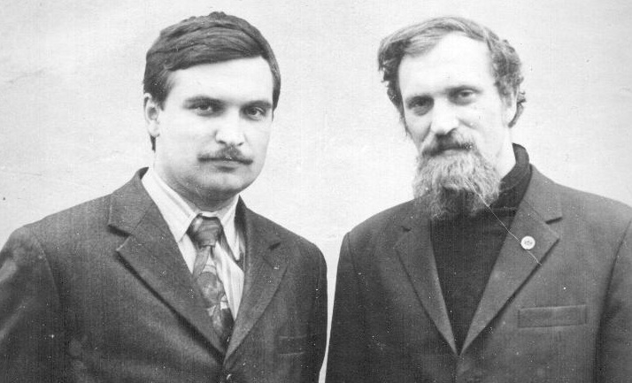 Илл.17. Фестиваль го в Ленинграде. Апрель 1976 года. Николай Михайловский (слева) и Георгий Нилов. Благодаря публикации в журнале «Юный техник» появилась, насколько мне известно, ещё одна группа в Днепропетровске вокруг тогда еще школьника Н.В. Михайловского. С ними я познакомился при опубликование статей в «Науке и жизни». Без Саши Тизика всё могло сорваться, просто некому было бы ждать до полуночи поезда в Ленинград, чтобы передавать через проводников мешки с тысячью писем. Саша — настоящий пассионарий. Кто бы смог, закончив МГУ, но увлёкшись игрой го, выучить японский язык! Я знаю только несколько человек, не украинцев, во всём Советском Союзе. С Колей Михайловским мы три года играли несколько партий по переписке. Он после победы в турнире на доске 13х13 на Фестивале го 1976 года был сразу призван в армию. По словам Юрия Павловича Филатова, ему показал правила игры в го бывший белый офицер между партиями в бильярд. Случилось это где-то в пятидесятые годы в Перми. Там же, по-видимому, познакомился с го и М.М. Постников. В начале шестидесятых Ю.П. Филатов переехал в Ленинград и поступил в аспирантуру ЛГПИ им. А.И. Герцена. Он написал диссертацию о творчестве немецкого поэта Ф. Шиллера — кстати, заслужившую высокую оценку у директора Пушкинского Дома. Не защитив её, Юрий Павлович поступил в аспирантуру Эрмитажа по современному искусству. Увы, по указанию Н.С. Хрущёва выставки абстракционистов в Москве и Ленинграде были разгромлены и аспирантуру в Эрмитаже «прикрыли». Подрабатывая консультациями для коллекционеров, Ю.П. Филатов переключился на пропаганду игры в го. Но в среде искусствоведов и художников он не нашел отклика. Всё изменилось коренным образом, когда Юрий Павлович познакомился с нами. Мы — «открытые всему миру», активные, увлекающиеся, немного азартные и авантюрные, любящие интеллектуальные занятия и «вращающиеся» в шахматных кругах, плюс имеющие достаточно свободного времени студенты. Он — энергичный, эрудированный в современном искусстве, владеющий литературным слогом, умеющий красиво говорить, а также убеждать, любящий игры, азартный и немного авантюрный, «знающий себе цену», но не во всем принимающий «правила игры» в советском обществе мужчина в расцвете сил. Мы оказались «близкими по духу», образовалась команда под лозунгом «Даёшь создание советского го и открытие Японии в придачу!». Совсем как по Л.Н. Гумилеву: «Даешь новый путь в Индию за пряностями с попутным открытием Америки!». Разумеется, Ю.П. Филатов был типичным пассионарием, своей кипучей энергией он заразил нас, настроил в резонанс с самим собой. Мы активно принялись за дело, обучили го друзей и знакомых, «пошли в массы», в сады и парки, в клубы и Дома культуры, пропагандировали го на шахматных турнирах, другими словами, везде, где было возможно, стали проводить собственные соревнования. И это дало плоды. Именно, в энтузиазме действий нашей команды было отличие от деятельности других групп. Они занимались игрой в го, как увлечением, никаких «грандиозных планов» не строили. Мы, конечно, осознавали, что мы первые, но это было не главное. Нас прежде всего интересовала сама игра, такая незнакомая, таящая в себе множество больших и маленьких открытий. Ведь мы до многого доходили сами, начиная практически с нуля. Литература по го к нам стала поступать позже. Это был второй вызов в нашей жизни. С первым в шахматах мы, как я считаю, успешно справились. За два-три года достигли уровня «подмастерьев», ещё бы несколько лет упорного труда и стали бы мастерами. Но пришёл второй вызов. И здесь начало было довольно успешным. За не полные три года мы научились побеждать японских любительских мастеров 1-го дана. И это несмотря на полтора года игры только на маленькой доске. Наше движение достигло больших успехов, около тысячи человек познакомившихся с игрой, сотни игроков, участвовавших в турнирах — наконец, признание го официальным видом спорта и выделение финансирования. Увы, жизнь сложна, взять «нахрапом» удается крайне редко, а при отсутствии опыта ошибок не избежать. С Мартой и Валерой мы учились в одной группе, и, освободившись от занятий, мы все шли к Юрию Павловичу — благо, что он жил на той же улице А. Попова. Нас сначала угощали музыкой Шопена и лекцией по всемирному искусству, заканчивалось все обсуждением проблем го. Юрий Павлович не был для нас учителем в общем смысле слова, скорее был наставником, Магистром Игры из книги Германа Гессе «Игра в бисер». Я благодарен Юрию Павловичу за наши беседы об искусстве и игре. Он читал в оригинале книгу голландского культуролога и антифашиста Йохана Хейзенги «Homo ludens» («Человек играющий»), и его идеи о взаимоотношении игры, творчества и культуры запали мне в душу. Мы все были увлечены идеей создания секции го и её работой. Для нас это было совершенно новое поле деятельности, приходилось всё придумывать самим, изобретать. Никакого сравнения с организацией шахмат в институте. В го всё было иначе. Люди приходили сами, искренне заинтересовавшиеся игрой. Люди разные, в основном молодёжь, но среди них были и инженеры, рабочие, даже несколько пенсионеров. С ними можно было разговаривать не только о го и Японии, но и о жизни в стране и в мире. Благодаря го, мой круг общения вырос в несколько раз. Вспоминаются беседы с А.И. Смысловским, зятем известной ленинградской актрисы Е.В. Юнгер. Несколько раз он приглашал меня к себе домой. Мы засиживались допоздна, обсуждая вопросы науки и техники, истории и культуры, разговаривали об общих проблемах человечества. Через 15 лет он привёл свою дочку Машу Юнгер в мою детскую группу при Доме учёных. Ну и, разумеется, была сама Игра. Она покоряла своей внутренней созидательной сущностью. Интуитивно мы чувствовали в ней огромное богатство комбинаторных возможностей. Притягивало и то, что на первых порах — да и в дальнейшем — нам приходилось создавать свою теорию игры, самим докапываться до её тайн. Ю.П. Филатов приносил нам переводы книг по го, изданных в Европе в конце Х1Х и начале ХХ веков. До части их идей мы уже додумались сами, другие были сложны в изложении, тем более, что разбор записей партий шахматной нотацией отнимал уйму времени. Первой книгой, подаренной нам японским любителем, стала «Пословицы и поговорки го» Кенсаку Сегойя. Свой язык, множество терминов. Особенно поразила пословица: «Не стремись выиграть, стремись сыграть красивую партию». Это противоречило всему нашему шахматному опыту. Позднее, работая над Школой го в журнале «Наука и жизнь», мы выработали рабочее определение: «Катачи (красивая форма) — это, то, что непонятно в игре мастеров». В 1967 году через общество дружбы «СССР-Япония» мы начали регулярно получать в Доме дружбы журналы «Go review». Это помогло нам сделать большой скачок в понимании игры. Мы не были «самоучками» в чистом виде. Прежде всего, мы учились друг у друга. Как только у кого-то появлялась какая-либо новая комбинация или идея, она обсуждалась, анализировалась и проверялась в собственной игре. Боб, Валера, Саша и я постоянно и часто встречались друг с другом. Видимо, оптимальное число лежит в районе 3-5 человек, но желательно с разными стилями игры. Много нам дали встречи с японскими любителями го, приезжавших в наш город. Совершенно другое понимание, иные манеры ведения игры. Так, в начале 70-х Валера довольно часто ездил в командировки в Москву, где встречался с корреспондентом японского телевидения Нисио-саном, 4-ый дан. Да и я сам, и Саша Василов выбирали маршруты командировок так, чтобы не лететь прямо в город назначения, а ехать поездом через Москву, чтобы на вечерок заглянуть к Нисио—сану и сыграть с ним пару партий. Именно этот учитель помог нам к 1974-ому году дорасти до уровня 3-го дана. Симода-сан, (6-ой дан) — это известный врач, который почти в течение 10 лет приезжал в СССР во время своего отпуска. Профессиональные игроки, и прежде всего Сёдзи Хасимото (9-ый дан) и Ясуо Кояма (9-ый дан), которые мало того, что прорвали «завесу политической и гуманитарной тишины» между Японией и СССР, прибыв к нам с «Кораблем дружбы» в 1978 году, так они и еще много раз приезжали, чтобы поиграть с нами, точнее сказать «научить советских игроков «гошному уму—разуму».
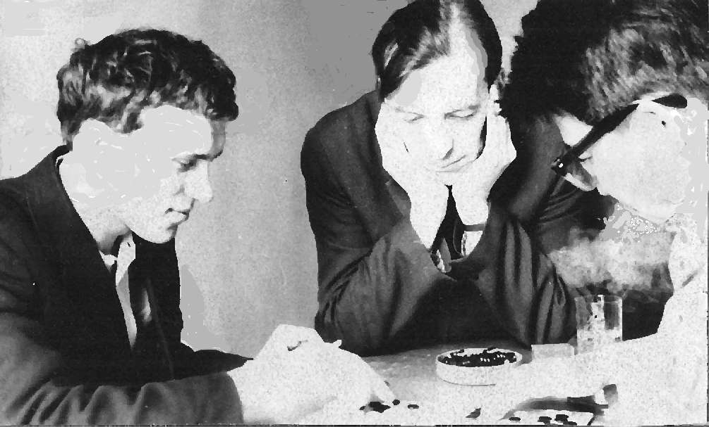
Илл.18. Георгий Нилов (слева) играет с японским любителем го (справа). Ю.П. Филатов (в центре) наблюдает за игрой. Наконец, большой загадкой для нас являлась сама Япония, её народ, её культура и общественная жизнь. Всё было необычно. Мы жадно вчитывались в её литературу: «Повесть о Гэндзи» М. Сикибу, «Записки у изголовья» С. Сэнагон, «Стон горы» Я. Кавабаты, в книги с впечатлениями о ней: «Ветка сакуры» В. Овчинникова, «Месяц вверх ногами» Д. Гранина, «Японские заметки» Н. Федоренко, «Фрегат Паллада» И. Гончарова. Мы были наполнены впечатлениями об этом народе, об этой стране, лежащей на самом краю Ойкумены. Эти воспоминания — лишь изложение фактов и действий. Но, в них я попытался рассказать вам, почему же эта игра столь сильно увлекла нас. В заключении хотелось бы обернуться назад. Произошёл творческий процесс узнавания новой для нас игры. Необходим ли он был? В принципе нет. Задачек в жизни хватало и без этого. Хотя любое новое начинание, любая новая деятельность вносит в нашу жизнь неоценимый опыт. Конечно, без Юрия Павловича, без его «затравки» это было бы делом безнадёжным. В лучшем случае образовали бы кружок любителей го. Ю.П.Филатов был настоящим пассионарием, вплоть до уровня жертвенности. Обладая даром убеждения, он приворожил нас как к самой игре, так и к таинственной стране Японии. Главной задачей, которую он ставил перед нами — «стать чемпионами в игре на маленькой доске». Тогда был «на слуху» выигрыш титула чемпиона мира Исером Куперманом в международных шашках. Конечно, мы интуитивно понимали безнадёжность этого замысла, но это придавало уверенности в правильности нашего выбора. Уйдя из секции, Юрий Павлович не порвал с го. В 1975 году он организовал группу любителей го в московском парке Сокольники, а в 1976 году инициировал выпуск первых комплектов в СССР на фабрике игрушек в г. Перхушково. В 1985 году он вместе с В. Трубицыным и О. Степановым организовали клуб настольных игр широкого профиля «Тысяча и одна игра» в ДК им Ленсовета. После заметки в городской молодёжной газете «Молодой ленинец» в клуб пришли популяризаторы малоизвестных и полузабытых игр и головоломок, а доцент Политехнического института В.Н. Белов издал (в 1987 — 92 гг) серию книг об интеллектуальных играх. Казалось бы, весь процесс возникновения секции го в Ленинграде был логичен и естественным. Но, как и в любом историческом процессе, большую роль играли случайности. Не покажи таинственная Оксана Борису Шурупову правила игры в го, не обрати я внимания на листок в клетку с сообщением о лекции Ю.П. Филатовым и не познакомься мы с ним, рождение российского го произошло бы лет на 5—10 позже. В крайнем случае, в связи с появлением компьютеров наш народ научился бы играть в 90-е годы. Зато мы сейчас почти «впереди Европы всей». СПб 17 мая 2016 |
|
|
|